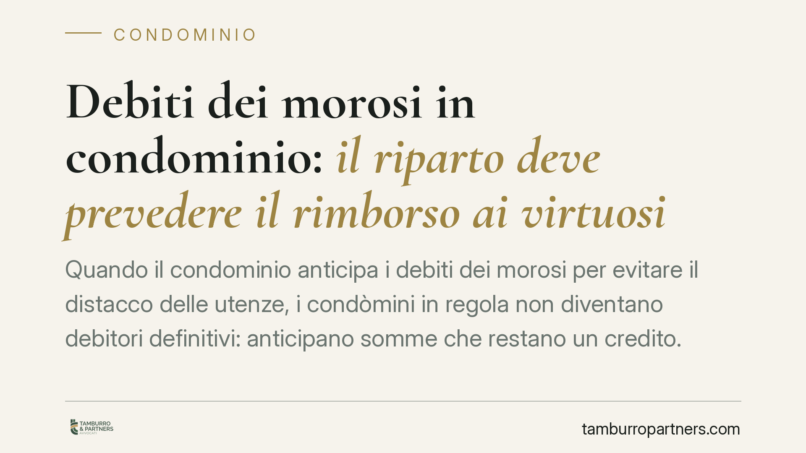

Debiti dei morosi in condominio: il riparto deve prevedere il rimborso ai virtuosi
Quando il condominio anticipa i debiti dei morosi per evitare il distacco delle utenze, i condòmini in regola non diventano debitori definitivi: anticipano somme che restano un credito. Una recente pronuncia del Tribunale di Napoli ha annullato un riparto straordinario privo di meccanismo di restituzione. Il tema tocca ogni assemblea alle prese con la morosità.

Il fatto
Un'assemblea approva un riparto straordinario per coprire i debiti maturati verso le società fornitrici di utenze a causa della morosità di alcuni condòmini. L'obiettivo è evitare il distacco di luce, acqua o gas. La delibera, però, non prevede alcun meccanismo di rimborso in favore di chi paga puntualmente. I condòmini in regola si trovano così a coprire, di tasca propria e in via apparentemente definitiva, un debito altrui.
Una recente pronuncia del Tribunale di Napoli ha annullato quella delibera proprio per questa lacuna. Il principio è lineare: l'anticipazione dei condòmini virtuosi non può trasformarsi in una perdita a loro carico senza che l'assemblea ne disciplini la restituzione.
Inquadramento normativo
Il punto di partenza è l'art. 63, comma 2, delle disposizioni di attuazione del codice civile. La norma stabilisce il cosiddetto beneficio di preventiva escussione: il creditore del condominio (ad esempio la società fornitrice) deve prima agire contro i condòmini morosi; solo dopo, e in caso di esito negativo, può rivolgersi a quelli in regola.
Da qui discende la ratio seguita dal giudice. I morosi restano i debitori principali. Se i condòmini virtuosi anticipano le somme per spegnere il debito verso il fornitore, non stanno pagando un proprio debito definitivo: stanno coprendo un'obbligazione che resta imputabile ai morosi. L'anticipazione conserva dunque natura di credito. Proprio per questo una delibera che impone l'esborso senza prevederne la restituzione tradisce l'assetto delineato dalla norma: pretende dai virtuosi un sacrificio patrimoniale che l'ordinamento non addossa loro in via definitiva.
Fondo cassa: con o senza vincolo di restituzione
La distinzione decisiva è tra due tipi di provvista.
- Fondo cassa con vincolo di restituzione. I condòmini anticipano somme che conservano natura di credito nei confronti dei morosi. È lo schema compatibile con l'art. 63 disp. att. c.c., perché preserva il diritto al rimborso.
- Fondo cassa senza vincolo di restituzione. Qui l'esborso diventa definitivo per chi paga. Secondo l'orientamento espresso nella pronuncia napoletana, una simile delibera incide in modo anomalo sul patrimonio dei singoli e non potrebbe essere imposta a maggioranza: richiederebbe il consenso unanime, oppure il rispetto di rigide condizioni di urgenza tali da giustificare l'anticipazione. Si tratta di una tesi che il giudice riferisce al caso concreto; va quindi letta come lettura adottata in quella controversia, non come regola generale codificata.
Implicazioni pratiche
Per l'amministratore, il messaggio è chiaro: fronteggiare la morosità è legittimo, ma il riparto straordinario deve dichiarare espressamente che le somme anticipate dai virtuosi sono un credito verso i morosi, con l'impegno dell'amministrazione a recuperarle.
Per il condòmino in regola, una delibera che gli impone di coprire definitivamente i debiti altrui è un provvedimento potenzialmente annullabile. Il rimedio è l'impugnazione ai sensi dell'art. 1137 c.c., da proporre entro trenta giorni decorrenti dalla deliberazione, per chi era presente e dissenziente, o dalla comunicazione del verbale, per gli assenti.
Cosa fare in concreto
- Verbalizzare il vincolo. L'amministratore inserisca nella delibera la natura di anticipazione delle somme richieste ai virtuosi e l'impegno al recupero verso i morosi.
- Attivare l'escussione dei morosi. Prima di gravare i condòmini in regola, procedere al recupero verso i morosi, come impone l'art. 63 disp. att. c.c.
- Controllare l'ordine del giorno. Il condòmino legga la delibera: se manca ogni clausola di rimborso, è un segnale da approfondire prima dell'assemblea.
- Rispettare il termine di impugnazione. Chi intende contestare la delibera non lasci decorrere i trenta giorni dell'art. 1137 c.c.
- Documentare gli esborsi. Conservare ricevute e riparti: sono la base per far valere il credito di rimborso verso i morosi.
È opportuno distinguere sempre tra una provvista restituibile e un sacrificio patrimoniale definitivo: è su questa linea che si gioca la validità della delibera.
Contributo informativo a cura di Tamburro & Partners Avvocati - Avv. Giuseppe Tamburro. Non costituisce parere legale.
Ogni condominio ha una storia a sé.
Se gestisci un'amministrazione e vuoi un confronto su una specifica questione condominiale, scrivi allo studio. Ti rispondiamo entro un giorno lavorativo.